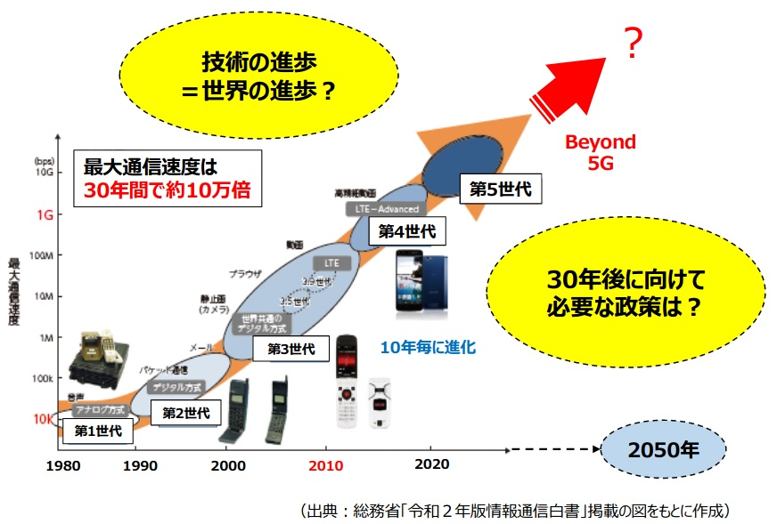

研究会について
技術は、実際に採用され、適正に利用されてこそ、社会経済にとっての意味を持ちます。 本研究会では、２０５０年に持続可能な形でより良い生活とより良い文化が実現することを目指し、デジタル技術をより良くより広くアダプト（採用）していく観点から、「人」に対する考察を深めつつ、長期的でグローバルな視野により、今後の望ましいデジタル技術政策について検討しています。
本研究会は、2020年９月に慶應義塾大学ＳＦＣに新設されました。参加者は、担当教員の政策実務経験を踏まえた助言を受け、他の参加者と議論しながら、デジタルガバメントのデザインの改善、デジタル文化教育の推進、技術利用の不安への対応など、それぞれの研究テーマを深めています。
活動履歴
２０２１年春学期は次のテーマに取り組みました：プライバシー・技術不安、マイナンバー・電子政府、教育・若年層のデジタル技術利用、医療介護・高年齢層のデジタル技術利用、表現の自由、サブスクリプション。また、中央官庁の政策担当者との意見交換を行いました。
担当教員から「個人のプライバシー等の意識とデジタルサービス利用の関係に関する実証分析」について情報通信学会において発表を行いました。
コンセプト
担当教員紹介
大磯一 慶應義塾大学環境情報学部准教授（有期）
兵庫県神戸市出身、灘中学校・高等学校、京都大学経済学部卒業後、2004年に総務省に入省。以後、個人情報保護、迷惑メール等の法令改正業務、電気通信事業規制、海外展開戦略関係などの情報通信政策の実務を担当。中国への留学時には産業組織学の修士号を取得。OECDのポリシーアナリストとして電気通信分野の報告書案の作成にも携わる。